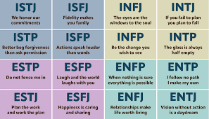

Intro
I wanted to play around with LLMs and see if they could guess my MBTI in 15 questions. The last time I took my MBTI I was ISTJ, so let’s see what ChatGPT-4o and Claude 3.7 think I am!

ChatGPT-4o
USER
Try to guess my MBTI in 15 questions
ASSISTANT
Sure! I’ll ask you a series of questions to get a better idea of your personality. Please answer as accurately as you can.
- Do you find it more energizing to spend time alone or with a group of people?
USER
I like both. Spending time alone is nice but I also enjoy being with my close friends.
ASSISTANT
- When making decisions, do you rely more on logic and objective analysis or personal values and how it will affect others?
USER
logic
ASSISTANT
- Are you more focused on the present moment and concrete facts, or do you prefer to think about future possibilities and abstract ideas?
USER
present moment and concrete facts
ASSISTANT
- Do you prefer having a structured and planned lifestyle, or do you like to be more flexible and spontaneous?
USER
both. I like having structure but allowing flexibility as well
ASSISTANT
- When interacting with others, do you tend to think out loud or prefer to process your thoughts internally before speaking?
USER
internally
ASSISTANT
- Do you find it easier to understand and remember details and specific information, or do you focus more on the overall concept and the big picture?
USER
details
ASSISTANT
- In a work environment, do you prefer to have clear guidelines and expectations, or do you enjoy having the freedom to innovate and explore?
USER
clear guidelines
ASSISTANT
- When conflicts arise, do you feel more comfortable addressing them directly, or do you tend to avoid confrontation?
USER
addressing them
ASSISTANT
- Are you more drawn to practical applications and real-world outcomes or theories and ideas that challenge the norm?
USER
practical applications
ASSISTANT
- Do you prefer to follow established methods and procedures, or are you inclined to experiment and try new approaches?
USER
established methods
ASSISTANT
- When attending social events, do you usually feel energized and enthusiastic, or drained and ready to leave after a short while?
USER
depends, but I can get drained easily
ASSISTANT
- Are you more comfortable dealing with tasks that require concrete results, or do you enjoy exploring creative and abstract problem-solving?
USER
concrete result
ASSISTANT
- Do you find it more satisfying to organize and complete tasks ahead of time, or do you thrive under the pressure of last-minute deadlines?
USER
organize
ASSISTANT
- When assessing a situation, do you tend to focus on the factual elements, or do you consider the emotional dynamics and relationships involved?
USER
factual elements
ASSISTANT
- Do you tend to be straightforward and direct in your communication, or do you take a more diplomatic and considerate approach?
USER
direct
ASSISTANT
Based on your responses, it seems you might be an ISTJ (Introverted, Sensing, Thinking, Judging) in the MBTI framework. This type is often characterized by a preference for structured environments, attention to detail, and a logical approach to decision-making. Of course, this is just an educated guess and might not fully capture the nuances of your personality. Would you say this aligns with how you see yourself?
Claude 3.7
USER
Try to guess my MBTI in 15 questions
ASSISTANT
MBTI Type Assessment
I’ll ask you 15 questions to help determine your MBTI personality type. Please answer each question based on your natural preferences, not how you might behave in specific situations.
Question 1
Do you prefer social gatherings with many people, or do you prefer spending time with just a few close friends or alone?
USER
I prefer spending time with a few close friends
ASSISTANT
Question 2
When making important decisions, do you tend to rely more on logical analysis and objective considerations, or on your personal values and how the decision will affect people?
USER
logical analysis
ASSISTANT
Question 3
When planning activities, do you prefer having a structured plan, or do you prefer keeping your options open and being spontaneous?
USER
I like having a structured plan but still allowing flexibility
ASSISTANT
Question 4
Do you often think about abstract concepts, possibilities, and what could be, or do you focus more on concrete facts, details, and what actually exists?
USER
concrete facts
ASSISTANT
Question 5
In conversations, do you tend to listen more or speak more?
USER
listen
ASSISTANT
Question 6
When facing a problem, do you prefer finding practical, proven solutions based on your experience, or exploring new, innovative approaches?
USER
proven solutions
ASSISTANT
Question 7
Do you find it easy to express your emotions openly, or do you tend to keep your feelings to yourself?
USER
keep to myself
ASSISTANT
Question 8
Do you prefer environments that are orderly and organized, or do you feel comfortable with some level of chaos and flexibility?
USER
orderly
ASSISTANT
Question 9
After a busy social event, do you feel energized or do you need time alone to recharge?
USER
depends on how I am feeling
ASSISTANT
Question 10
When someone presents you with a new idea, do you first look for flaws in the reasoning or do you first consider how it might work?
USER
how it might work
ASSISTANT
Question 11
Do you tend to make decisions quickly and stick with them, or do you prefer to keep reconsidering your options?
USER
reconsider
ASSISTANT
Question 12
Are you more interested in the big picture and overall concepts, or in the specific details and concrete facts?
USER
details
ASSISTANT
Question 13
In group settings, do you usually take the initiative to introduce yourself to new people, or do you wait for others to approach you?
USER
wait for others
ASSISTANT
Question 14
Do you find it more natural to plan ahead and follow schedules, or to adapt to situations as they arise?
USER
both
ASSISTANT
Question 15
When discussing a controversial topic, are you more concerned with finding the objective truth, or maintaining harmony in the group?
USER
truth
ASSISTANT
Your MBTI Assessment Results
Based on your responses, I believe your MBTI type is likely ISTJ (Introverted, Sensing, Thinking, Judging).
Why ISTJ?
- Introverted (I): You prefer spending time with a few close friends, tend to listen more than speak, wait for others to approach you, and generally keep your feelings to yourself.
- Sensing (S): You focus on concrete facts and details rather than abstract concepts, and prefer proven solutions based on experience.
- Thinking (T): You rely on logical analysis for decisions and value finding objective truth over maintaining harmony.
- Judging (J): You prefer orderly environments and structured plans, though you indicated some flexibility.
ISTJs are often described as reliable, practical, and detail-oriented individuals who value tradition and order. They tend to be logical decision-makers who approach problems methodically.
Would you like me to explain more about ISTJ characteristics or would you like to share if this assessment feels accurate to you?
Thoughts
Wow, maybe I really am a strong ISTJ because both LLM models were able to guess it in only 15 questions, which is a lot less than the normal online test. I thought that both models would ask almost exaclty the same questions going into it because I assumed they would use similar data for this. Thus, I was surprised when I got some different questions between the models. I like how Claude strucured the final output and it makes it easier to understand what each letter means. Overall, this was fun and I would recomment trying it out yourself! Will it get it right for you?